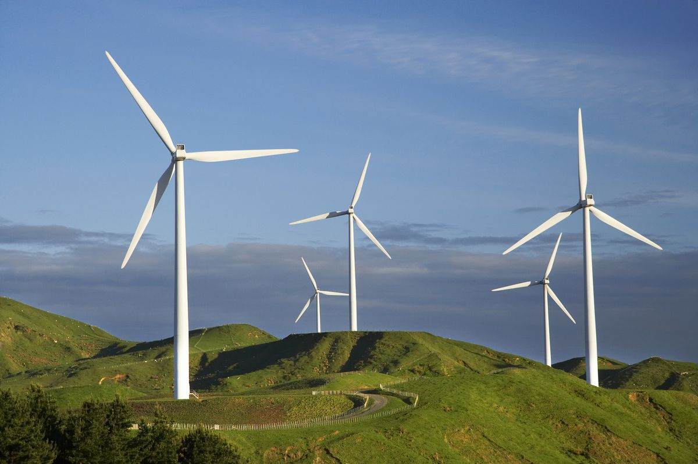
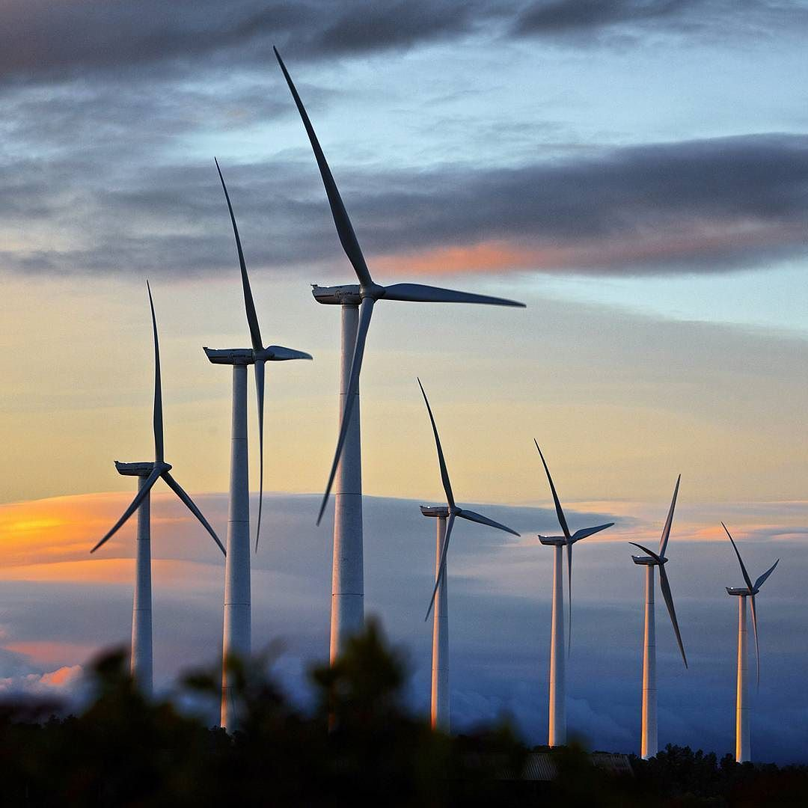
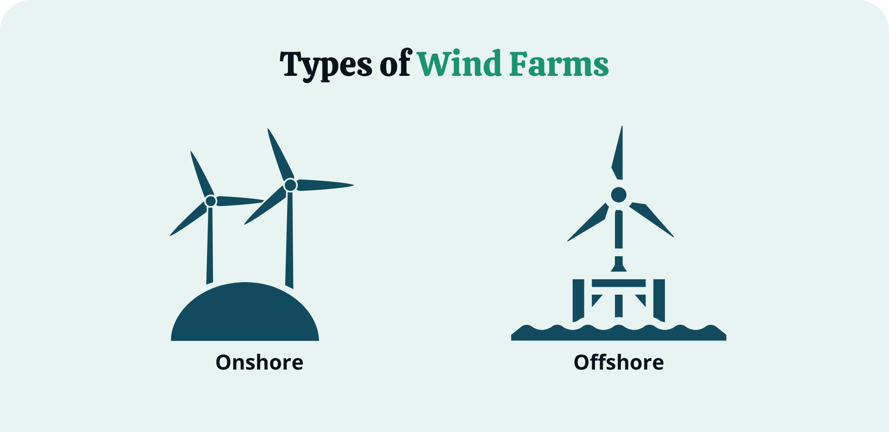
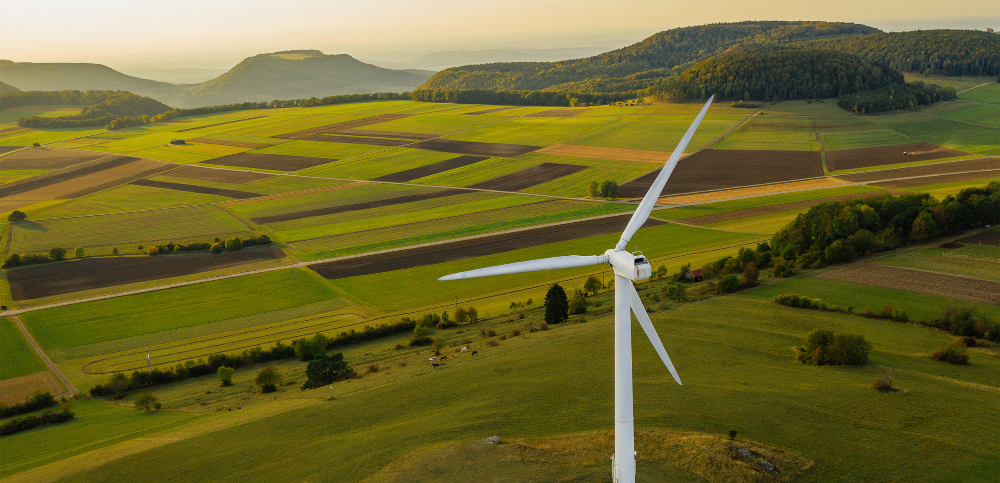
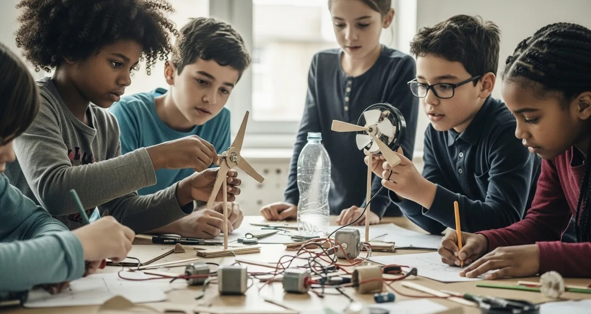
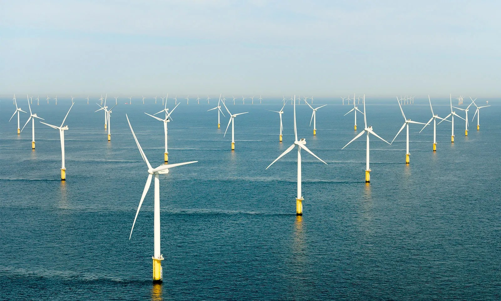

Wind Energy: Harnessing the Power of Air
Wind energy is one of the fastest-growing and most cost-effective sources of renewable electricity in the world. By converting the kinetic energy of moving air into electricity, wind turbines offer a clean, inexhaustible power source that plays a central role in achieving SDG 7 ensuring access to affordable, reliable, sustainable, and modern energy for all.

How Wind Energy Works
Wind turbines work by using large rotor blades typically 50 to 80 metres long to capture the kinetic energy of moving air. As wind pushes against the blades, they spin a shaft connected to a generator, which converts rotational motion into electrical energy. The electricity is then fed into the national grid or used locally.
Key Components
A wind turbine consists of rotor blades, a nacelle (housing the generator and gearbox), a tower, and foundation structures. Modern turbines also include computerised yaw systems that rotate the nacelle to face into the wind, and pitch control systems that adjust blade angles to optimise efficiency and protect against storm damage.
"Wind power capacity has grown more than tenfold in the past two decades, and in 2023 alone, the world added a record 117 gigawatts of new wind capacity." — Global Wind Energy Council, 2024

Types of Wind Energy
Wind energy is deployed in two main forms, each suited to different environments and scales of generation.
Onshore Wind
Onshore wind farms are built on land, typically in open countryside, hills, or coastal areas with consistent wind speeds. They are less expensive to build and maintain than offshore installations and currently provide the majority of global wind capacity. Countries like Germany, the USA, China, and Spain have extensive onshore wind networks.
Offshore Wind
Offshore wind turbines are installed in shallow coastal waters where wind speeds are higher and more consistent than on land. Although more expensive to construct, offshore turbines can be built larger some exceeding 15 megawatts and generate significantly more electricity per unit. The UK leads the world in offshore wind capacity, with major wind farms in the North Sea powering millions of homes.

Benefits of Wind Energy
Wind energy delivers significant environmental, economic, and social benefits that make it a cornerstone of the global clean energy transition.
Environmental Impact
Once installed, wind turbines produce zero direct carbon emissions during operation. Over its lifetime, a single large offshore turbine can offset over 50,000 tonnes of CO₂ equivalent to taking 10,000 cars off the road for a year. Wind energy uses no water during generation, unlike fossil fuel or nuclear plants, making it particularly valuable in water-scarce regions.
Economic Benefits
The wind energy sector supports hundreds of thousands of jobs globally in manufacturing, installation, and maintenance. The cost of onshore wind has fallen by over 70% since 2010, making it one of the cheapest sources of new electricity generation in most countries. Wind farms also generate rental income for landowners and tax revenues for local communities.

What Students Can Do
You don't need to own a wind turbine to contribute to the wind energy revolution. Here are four impactful actions any student can take:
1. Switch to a Green Energy Tariff
Choosing a 100% renewable electricity tariff for your home or student accommodation directly funds wind and solar generation. Many providers now offer green tariffs at comparable or lower prices to standard contracts switching takes less than ten minutes online.
2. Support Wind Energy Policy
Write to your local MP or councillor supporting the expansion of onshore and offshore wind. Planning permission remains one of the biggest barriers to new wind development in the UK. Collective student voices carry significant political weight.
3. Reduce Peak Demand
Wind energy is most abundant at certain times of day. Using smart appliances and shifting energy-intensive tasks like laundry or dishwashing to off-peak hours helps balance the grid and makes wind power more effective at displacing fossil fuels.
4. Study or Work in the Sector
The wind energy industry faces a significant skills shortage. Engineering, data science, environmental science, and business students all have valuable roles to play. Many companies offer summer internships and graduate schemes specifically targeting university students.

The Global Picture
Wind energy now generates over 2,000 terawatt-hours of electricity annually enough to power more than 500 million average homes. China, the USA, Germany, India, and the UK are the top five producers of wind energy globally. In Denmark, wind turbines regularly generate more than 100% of the country's electricity demand on windy days, with the surplus exported to neighbouring countries.
The International Energy Agency estimates that wind power must triple by 2030 to meet global climate targets. Advances in floating offshore wind technology are opening up deep-water sites previously inaccessible to turbines, dramatically expanding the potential resource. Combined with falling costs and improving battery storage, wind is set to become the world's single largest source of electricity by 2035.

References
- Global Wind Energy Council (2024) Global Wind Report 2024. Available at: https://gwec.net/ (Accessed: 20 Mar 2026).
- International Energy Agency (2023) Wind Power. Available at: https://www.iea.org/energy-system/renewables/wind (Accessed: 21 Mar 2026).
- United Nations (2023) SDG 7 — Affordable and Clean Energy. Available at: https://sdgs.un.org/goals/goal7 (Accessed: 20 Mar 2026).
- Energy Saving Trust (2024) Wind Turbines. Available at: https://energysavingtrust.org.uk/ (Accessed: 21 Mar 2026).